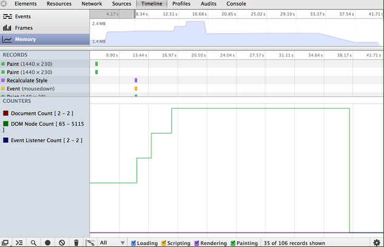
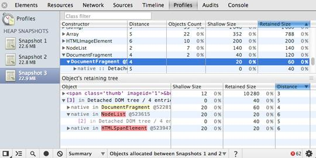
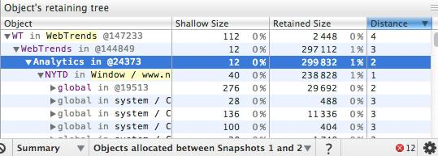
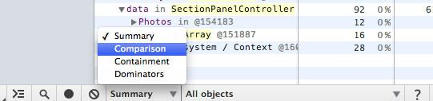
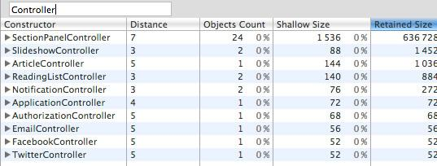

A memory leak is a gradual loss of available computer memory. It occurs when a program repeatedly fails to return memory it has obtained for temporary use. JavaScript web apps can often suffer from similar memory related issues that native applications do, such as leaks and bloat but they also have to deal with garbage collection pauses.
Although JavaScript uses garbage collection for automatic memory management, effective memory management is still important. In this guide we will walk through profiling memory issues in JavaScript web apps. Be sure to try the supporting demos when learning about features to improve your awareness of how the tools work in practice.
Note: Some of these features we will be using are currently only available in Chrome Canary. We recommend using this version to get the best memory profiling tooling for your applications.


Note: We recommend users to do heap snapshots with clear console and no active breakpoints in the debugger.
The memory graph starts with a root, which may be the `window` object of the browser or the `Global` object of a Node.js module. You don't control how this root object is GC'd.


Note: When profiling memory issues in Chrome, it is a good idea to setup a clean-room testing environment.
Using the Chrome Task Manager you can quickly see if a page is consuming a lot of memory by monitoring the memory columns while performing actions that may be causing this to happen. The Task Manager is accessed from the Chrome menu > Tools or by pressing Shift + Esc.

To read more about how to isolate problems that might be causing leaks during your memory profiling sessions, see Memory profiling with the Chrome DevTools by Zack Grossbart.


Example: Try out this example of memory growth where you can practice how to effectively use Timeline memory mode.
A garbage collector (such as the one in V8) needs to be able to locate objects in your application which are live, as well as, those which are considered dead (garbage) and are unreachable.
If garbage collection (GC) misses any dead objects due to logical errors in your JavaScript then the memory consumed by these objects cannot be reclaimed. Situations like this can end up slowing down your application over time.
This often happens when you've written your code in such a way that variables and event listeners you don't require are still referenced by some code. While these references are maintained, the objects cannot be correctly cleaned up by GC.
Remember to check and nullify variables that contain references to DOM elements which may be getting updated/destroyed during the lifecycle of your app. Check object properties which may reference other objects (or other DOM elements). Be sure to keep an eye on variable caches which may accumulate over time.
On the Profiles panel, choose Take Heap Snapshot , then click Start or press Cmd + E or Ctrl + E:

Snapshots are initially stored in the renderer process memory. They are transferred to the DevTools on demand, when you click on the snapshot icon to view it. After the snapshot has been loaded into DevTools and has been parsed, the number below the snapshot title appears and shows the total size of the reachable JavaScript objects:

Example: Try out this example of garbage collection in action and monitor memory usage in the Timeline.
Snapshots can be removed (both from DevTools and renderers memory) by pressing the Clear all profiles icon ():

Note: Closing the DevTools window will not delete collected profiles from the renderers memory. When reopening DevTools, all previously taken snapshots will reappear in the list of snapshots.
Remember that we mentioned earlier you can force GC from the DevTools as part of your snapshot workflow. When taking a Heap Snapshot, it is automatically forced. In Timeline it can be very convenient to force a GC by clicking on the trash can (Collect Garbage) button ().
Example: Try out this example of scattered objects and profile it using the Heap Profiler. You should see a number of (object) item allocations.


Example: Try this demo page (opens in a new tab) to understand how the Summary view can be used.
Remember that yellow objects have JavaScript references on them and red objects are detached nodes which are referenced from one with a yellow background.
Example: Try this demo page (opens in a new tab) to get an idea how to use snapshot comparison for detecting leaks.

Example: Try this demo page (opens in a new tab) for finding out how to explore closures and event handlers using the view.
A tip about closures
It helps a lot to name the functions so you can easily distinguish between closures in the snapshot. For example, this example does not use named functions:
function createLargeClosure() {
var largeStr = new Array(1000000).join('x');
var lC = function() { // this is NOT a named function
return largeStr;
};
return lC;
}
Whilst this example does:
function createLargeClosure() {
var largeStr = new Array(1000000).join('x');
var lC = function lC() { // this IS a named function
return largeStr;
};
return lC;
}

Examples: Try out this example of why eval is evil to analyze the impact of closures on memory. You may also be interested in following it up with this example that takes you through recording heap allocations.
A unique ability of the tool is to reflect bidirectional dependencies between browser native objects (DOM nodes, CSS rules) and JavaScript objects. This helps to discover otherwise invisible leaks happening due to forgotten detached DOM subtrees floating around.
DOM leaks can be bigger than you think. Consider the following sample - when is the #tree GC?
var select = document.querySelector;
var treeRef = select("#tree");
var leafRef = select("#leaf");
var body = select("body");
body.removeChild(treeRef);
//#tree can't be GC yet due to treeRef
treeRef = null;
//#tree can't be GC yet due to indirect
//reference from leafRef
leafRef = null;
//#NOW can be #tree GC
#leaf maintains a reference to it's parent (parentNode) and recursively up to #tree, so only when leafRef is nullified is the WHOLE tree under #tree a candidate for GC.

Examples: Try out this example of leaking DOM nodes to understand where DOM nodes can leak and how to detect them. You can follow it up by also looking at this example of DOM leaks being bigger than expected.
To read more about DOM leaks and memory analysis fundamentals checkout Finding and debugging memory leaks with the Chrome DevTools by Gonzalo Ruiz de Villa.
Native objects are most easily accessible from Summary and Containment views — there are dedicated entry nodes for them:

Example: Try this demo (opens in a new tab) to play with detached DOM trees.
The Dominators view shows the dominators tree for the heap graph. The Dominators view looks similar to the Containment view, but lacks property names. This is because a dominator of an object may lack direct references to it, that is, the dominators tree is not a spanning tree of the graph. But this only serves for good, as helps us to identify memory accumulation points quickly.
Note: In Chrome Canary, Dominators view can be enabled by going to Settings > Show advanced heap snapshot properties and restarting the DevTools.

Examples: Try this demo (opens in a new tab) to train yourself in finding accumulation points. Follow it up with this example of running into retaining paths and dominators.
The object tracker combines the detailed snapshot information of the heap profiler with the incremental updating and tracking of the Timeline panel. Similar to these tools, tracking objects' heap allocation involves starting a recording, performing a sequence of actions, then stop the recording for analysis.
The object tracker takes heap snapshots periodically throughout the recording (as frequently as every 50 ms!) and one final snapshot at the end of the recording. The heap allocation profile shows where objects are being created and identifies the retaining path.

Enabling and using the Object Tracker
To begin using the Object Tracker:
Make sure you have the latest Chrome Canary.
Open the Developer Tools and click on the gear icon in the lower right.
Now, open the Profiler panel, you should see a profile called "Record Heap Allocations"

The bars at the top indicate when new objects are found in the heap. The height of each bar corresponds to the size of the recently allocated objects, and the color of the bars indicate whether or not those objects are still live in the final heap snapshot: blue bars indicate objects that are still live at the end of the timeline, gray bars indicate objects that were allocated during the timeline, but have since been garbage collected.

In the example above, an action was performed 10 times. The sample program caches five objects, so the last five blue bars are expected. But the leftmost blue bar indicates a potential problem. You can then use the sliders in the timeline above to zoom in on that particular snapshot and see the objects that were recently allocated at that point.

Clicking on a specific object in the heap will show its retaining tree in the bottom portion of the heap snapshot. Examining the retaining path to the object should give you enough information to understand why the object was not collected, and you can make the necessary code changes to remove the unnecessary reference.
Q: I don't see all the properties of objects, I don't see non-string values for them! Why?
Not all properties are actually stored on the JavaScript heap. Some of them are implemented using getters that execute native code. Such properties are not captured in heap snapshots in order to avoid the cost of calling getters and to avoid possible program state changes if getters are not "pure" functions. Also, non-string values such as numbers are not captured in an attempt to reduce snapshot size.
Q: What does the number after the *@* char mean — is this an address or an ID? Is the ID value really unique?
This is an object ID. Displaying an object's address makes no sense, as objects are moved during garbage collections. Those object IDs are real IDs — that means, they persist among multiple snapshots taken and are unique. This allows precise comparison between heap states. Maintaining those IDs adds an overhead to GC cycles, but it is only initiated after the first heap snapshot was taken — no overhead if heap profiles aren't used.
Q: Are "dead" (unreachable) objects included in snapshots?
No. Only reachable objects are included in snapshots. Also, taking a snapshot always starts with doing a GC.
Note:At the time of writing, we are planning on avoiding this GC to reduce the drop in used heap size when taking heap snapshots. This has yet to be implemented but garbage would still be out of the snapshot.
Q: What comprises GC roots? Many things:
Q: I've been told to use the Heap Profiler and Timeline Memory view for detecting memory leaks. What tool should be used first? The Timeline. Use it to diagnose excessive memory usage when you first notice your page has slowed down after extended use. Slowdown was once a classic symptom of a memory leak but it could also be something else—maybe you have a paint or network bottleneck in your page, so make sure to fix the real issue in your page. To diagnose whether memory is the issue, go to the Timeline panel and Memory view. Hit the record button and interact with your application, repeating any steps you feel may be causing a leak. Stop the recording. The graph you see will display the memory allocated to your application. If it happens to be consuming an increasing amount of this over time (without ever dropping), it's an indication you may have a memory leak. The profile for a healthy application should look more like a sawtooth curve as memory is allocated then freed when the garbage collector comes in. There's nothing to worry about here—there's always going to be a cost of doing business in JavaScript and even an empty `requestAnimationFrame` will cause this type of sawtooth, you can't avoid it. Just ensure it's not sharp as that's an indication a lot of allocations are being made, which can equate to a lot of garbage on the other side.


Example: Try out this example of detached nodes where you can watch node evolution in the Timeline then take heap snapshots to find detached nodes.
Q: What do the Shallow and Retained Size columns represent and what are the differences between them?
So, objects can be kept in memory (be alive) in two different ways—either directly by another alive object (window and document are always alive objects) or implicitly by holding references from native part of the renderer (like DOM objects). The latter is what ends up preventing these objects from being disposed by GC automatically, causing leaks. The size of memory held by an object itself is known as the shallow size (generally, arrays and strings have larger shallow sizes).

An object of any size can hold a ton of memory if it prevents other objects from being disposed. The size of memory that can be freed once an object is deleted (and this its dependents made no longer reachable) is called the retained size.
Q: There's a lot of data in the constructor and retained views. Where should I start digging into to discover if I have a leak?
It's generally a good idea to begin investigation from the first object retained in your tree as retainers are sorted by distance (well, distance to the window).

The object retained with the shortest distance is usually your first candidate for causing a memory leak.
Q: What's the difference between the different Summary, Comparison, Dominators and Containment views?
You may get some mileage by switching between the different data views available at the bottom of the screen.

Summary view helps you hunt down objects (and their memory use) based on type grouped by constructor name. This view is particularly helpful for tracking down DOM leaks.
Comparison view helps you track down memory leaks, by displaying which objects have been correctly cleaned up by the garbage collector. Generally used to record and compare two (or more) memory snapshots of before and after an operation. The idea is that inspecting the delta in freed memory and reference count lets you confirm the presence and cause of a memory leak.
Containment view provides a better view of object structure, helping us analyse objects referenced in the global namespace (i.e. window) to find out what is keeping them around. It lets you analyse closures and dive into your objects at a low level.
Dominators view helps confirm that no unexpected references to objects are still hanging around (i.e that they are well contained) and that deletion/garbage collection is actually working.
Q: What do the various constructor (group) entries in the Heap profiler correspond to?

(global property)—intermediate objects between a global object (like 'window') and an object referenced by it. If an object is created using a constructor Person and is held by a global object, the retaining path would look like [global] > (global property) > Person. This contrasts with the norm, where objects directly reference each other. We have intermediate objects for performance reasons. Globals are modified regularly and property access optimisations do a good job for non-global objects aren't applicable for globals.
(roots)—The root entries in the retaining tree view are the entities that have references to the selected object. These can also be references created by the engine for its own purposes. The engine has caches which reference objects, but all such references are weak and won't prevent an object from being collected given that there are no truly strong references.
(closure)—a count of references to a group of objects through function closures
(array, string, number, regexp)—a list of object types with properties which reference an Array, String, Number or regular expression
(compiled code)—simply, everything related to compiled code. Script is similar to a function but corresponds to a <script> body. SharedFunctionInfos (SFI) are objects standing between functions and compiled code. Functions are usually have a context, while SFIs do not.
HTMLDivElement, HTMLAnchorElement, DocumentFragment etc—references to elements or document objects of a particular type referenced by your code.
Many of the other objects you may see were likely generated during the lifecycle of your code and can include event listeners as well as custom objects, like the controllers below:

Q: Is there anything I should be turning off in Chrome that might be influencing my figures?
When performing any type of profiling using the Chrome DevTools, it is recommended that you either run in incognito mode with all extensions disabled or start Chrome with a custom user data directory (--user-data-dir="").
Apps, extensions and even console logging can have an implicit impact on your figures and you want to keep them as reliable as possible.
Closing remarks
The JavaScript engines of today are highly capable of automatically cleaning garbage generated by our code in a number of situations. That said, they can only go so far and our applications are still prone to memory leaks caused by logical errors. Use the tools available to find out your bottlenecks and remember, don't guess it - test it.
Although we've mentioned them throughout this guide, a good set of end-to-end examples for testing various memory issues, ranging from growing memory leaking DOM nodes can be found summarized below. You may wish to experiment with them before attempting to use the tooling on your own more complex page or application.
Additional demos are available for:
There are a number of excellent resources written by the community on finding and fixing memory issues in web apps using the Chrome DevTools. Below are a selection of some you may find useful:
{{/partials.standard_devtools_article}}